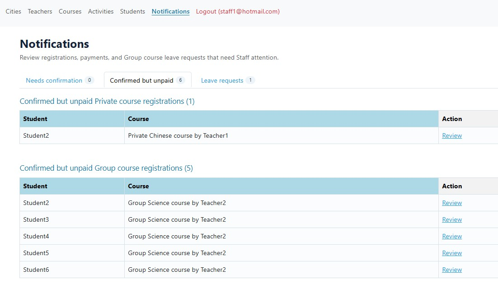
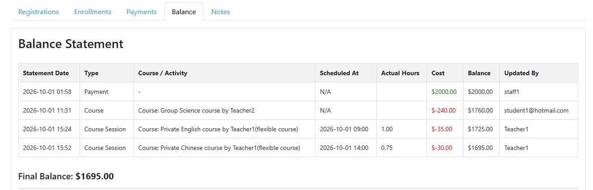

Keep Payments and Student Balances Organized
Know what was paid, what it was used for, and what is left.
Receiving a payment is only part of the job.
You also need a clear record of what a student has paid, which courses or sessions have been charged, and how much balance remains.
As students take more courses and lessons, those records can become difficult to follow — especially when payments and learning activity are tracked separately.
ClassLift helps keep payment records and student balances connected to the courses and sessions behind them.
Keep Track of Outstanding Payments
Some students may be registered for a course before their payment has been recorded.
ClassLift gives staff a clear place to see registrations that still need attention.

Instead of checking students individually or maintaining a separate list, staff can quickly see where follow-up may be needed.
See the Story Behind Every Balance
A balance is more useful when you know how it got there.
ClassLift keeps a clear statement of the activity behind each student’s balance.

When a payment is received, it can be recorded on the student’s account. As the student participates in courses and lessons, related charges can also appear in the balance history.
This makes it easier to answer three simple questions:
- How much was paid?
- What was it used for?
- How much is left?
Instead of seeing only a final balance, you can understand the activity behind it.
Connect Payment Records to Learning Activity
Payment records should not exist separately from the courses they are paying for.
ClassLift helps keep financial records connected to the student’s actual learning activity.
A course registration can be reflected in the student’s account. Individual sessions can be reflected there too.
That creates a clearer connection between:
Payment → Course or Session → Balance
You get a more complete record without having to piece together information from separate spreadsheets, messages, and course records.
Clearer Records. Fewer Questions.
As your tutoring business grows, keeping student balances organized becomes increasingly important.
ClassLift gives you a simple way to record payments, track course and session charges, and understand how each student’s balance changes over time.
Know what was paid. Know what it was used for. Know what is left.
Ready to keep your tutoring records organized?